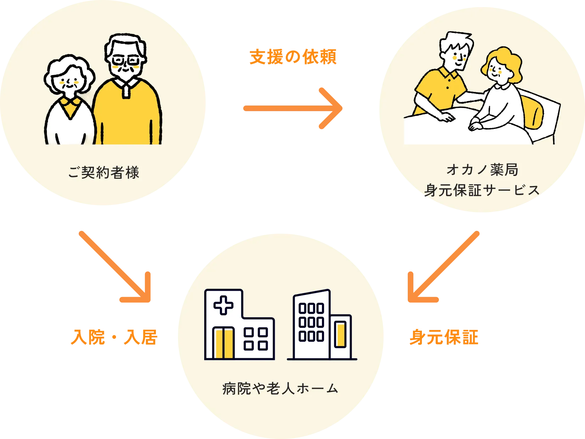

オカノ薬局の身元保証サービスは、名前だけの身元保証人ではありません。
ご本人の状況に応じて安心できる保証を提供します。
入院・転院・介護施設への入所など、さまざまな場面でお願いされる保証人業務を一括して支援します。


オカノ薬局の身元保証サービスは、名前だけの身元保証人ではありません。
ご本人の状況に応じて安心できる保証を提供します。
入院・転院・介護施設への入所など、さまざまな場面でお願いされる保証人業務を一括して支援します。


医療機関・介護施設に求められる保証人を務めます。
支払い手続きや費用精算のサポートを行います。
お家を借りる際の保証人として対応します。
24時間365日必要な駆け付けが出来るよう連絡体制を確保します。
本人の意志を尊重し医療機関との調整を支援します。
必要な手続き・清算・居室引き渡しなどの対応を支援します。
生活支援サービスは、ご契約者さまが住み慣れた環境で安心して日々を過ごせるように、
日常生活のさまざまな場面をサポートするサービスです。
買い物や手続きといった身近なお困りごとから、通院・行政対応など一人では負担になりやすい場面まで、
状況に応じてお手伝いします。

定期的な連絡や確認を行い、日々の安心を見守ります。
日用品の購入や外出時の同行など、日常生活をサポートします。
郵便物の確認や行政・公共関連の手続きをお手伝いします。
病院や施設への訪問時に付き添い、不安を軽減します。
必要に応じて関係機関との連絡や調整を行います
体調不良や急なトラブル時に、速やかな連絡と対応を行います。
看取りから葬儀・納骨、死後事務まで、ご逝去後に家族が行うべき手続きもフルサポートいたします。
ご逝去された場合は、速やかに関係各所に連絡をとり、葬儀や納骨の手配を行います。
遺品の整理や電気・ガス・水道などの停止手続きといった事務手続きなども承ります。ご希望に応じて、相続人や希望する方へのご連絡・ご報告などもいたします。
弊社では死後事務のサービス終了後、不足等がないかご契約の弁護士もしくは司法書士にご確認いただきます。

訃報発生時の連絡・確認・初動対応を迅速に行います。
親族・関係者への連絡や意思確認の調整をサポートします。
式場選定や日程調整、宗教者との連絡など実務的な手配を支援します。
必要に応じて儀礼時の立会いや同行支援を行います。
役所・年金・保険・銀行等の必要な手続きのサポートを行います。
物品整理や退去・清掃など、負担が大きい作業も支援します。
弁護士・司法書士と協力しながら、月々のお支払いや後見申立をサポートいたします。
お支払いいただいたお金以外にも、財産の管理などに不安がある場合には、弁護士・司法書士と協力して金銭管理を行います。
また認知症や急病で判断能力が著しく低下してしまった場合は、成年後見制度の利用申立をサポートいたします。

弁護士・司法書士による預金口座や通帳の管理、支払い・請求の代行などを行います。
弁護士・司法書士による定期的な収支の確認や、請求書・支払い予定のチェックをサポートします。
弁護士・司法書士による成年後見制度など、法的な枠組みについてのご相談から手続き支援まで対応します。
弁護士・税理士・司法書士などの専門家との調整や連絡を支援します。